Recinto con césped
Todo el recinto está cubierto de césped para que disfrutes del tardeo de la forma más cómoda.
Un verano. Un enclave histórico. Cuatro maneras de disfrutarlo. Esto es Plaza Paraíso.
Este verano 2026, la histórica Plaza de Toros de Torremolinos se convierte en el gran punto de encuentro de la cultura. Durante más de 50 días, su ruedo se llena de conciertos, teatro, gastronomía y ocio en un entorno único al aire libre, a un paso de la playa.
Plaza Paraíso nace para locales de Torremolinos y Málaga, y para quienes pasan el verano en la Costa del Sol buscando planes diferentes. Una cita abierta, cercana y veraniega para vivir las mejores tardes del verano.

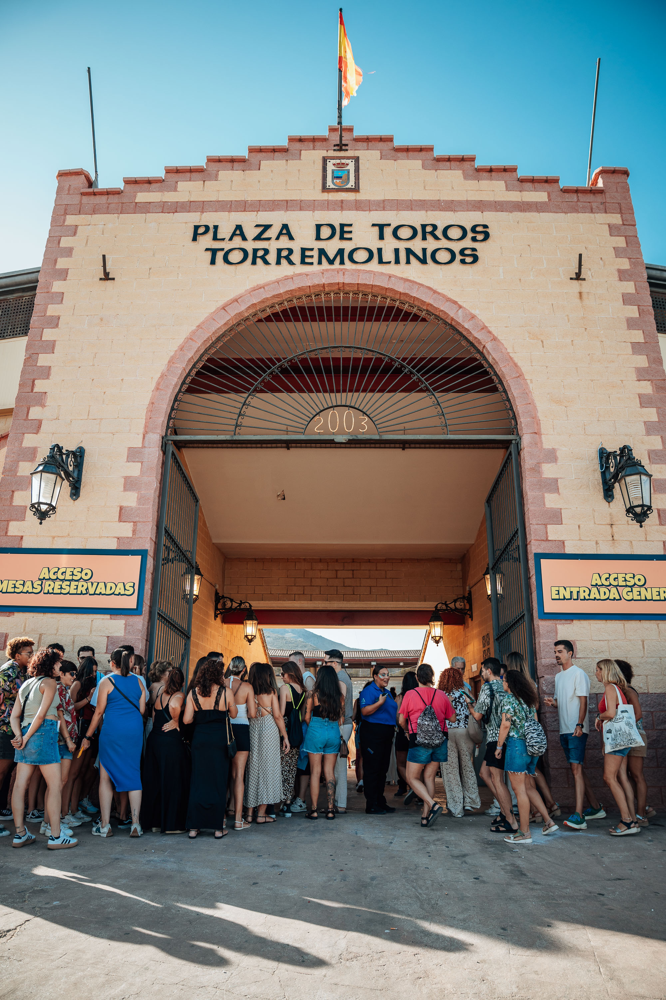
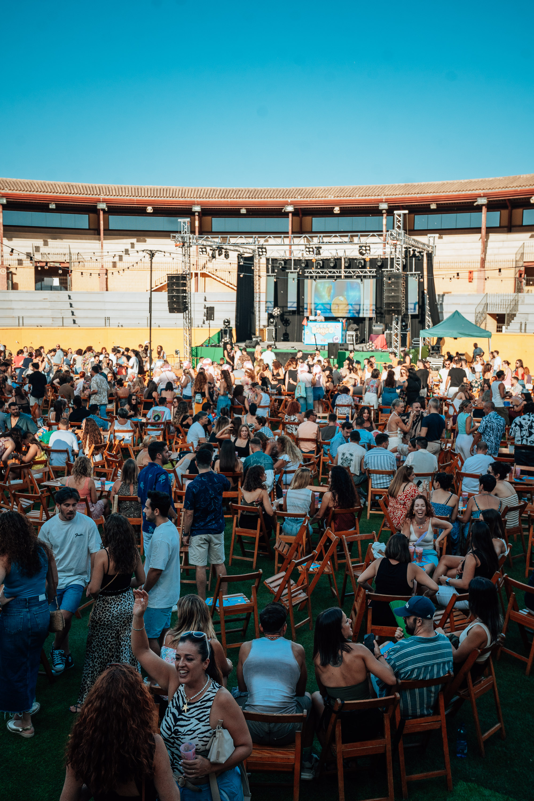
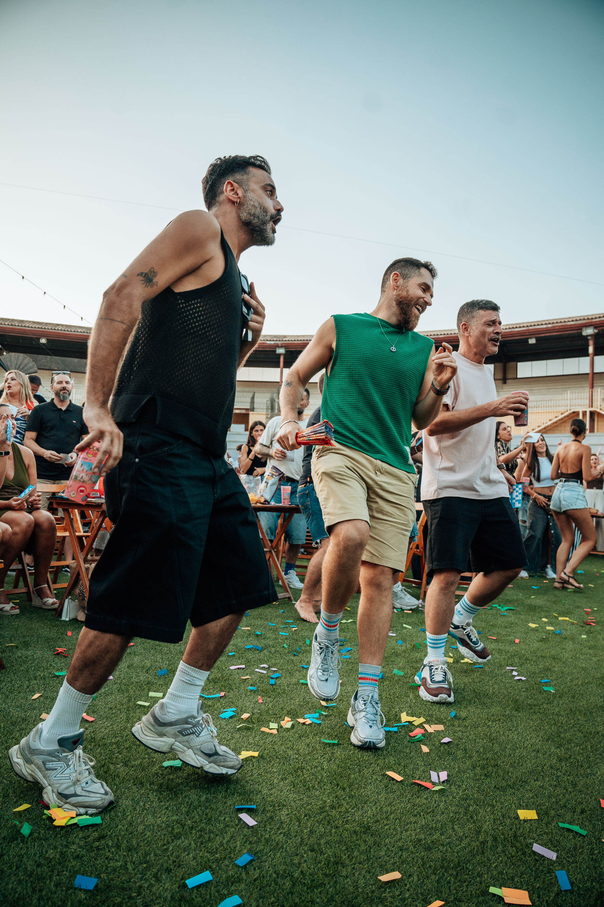
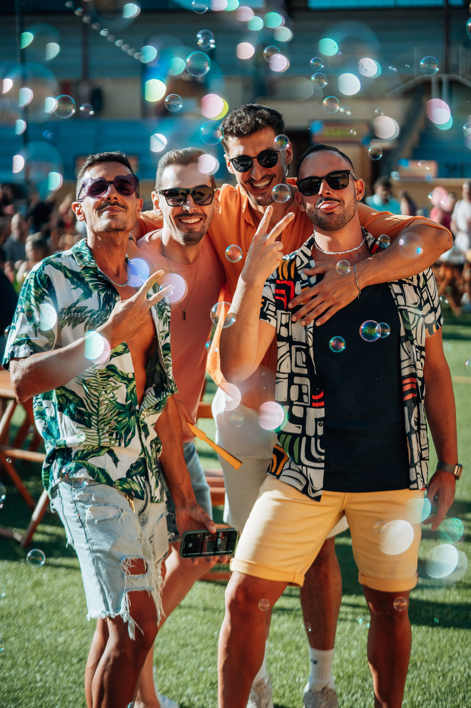

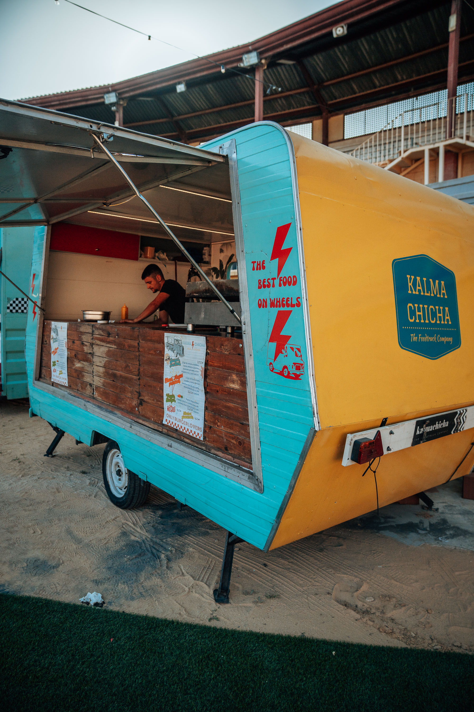
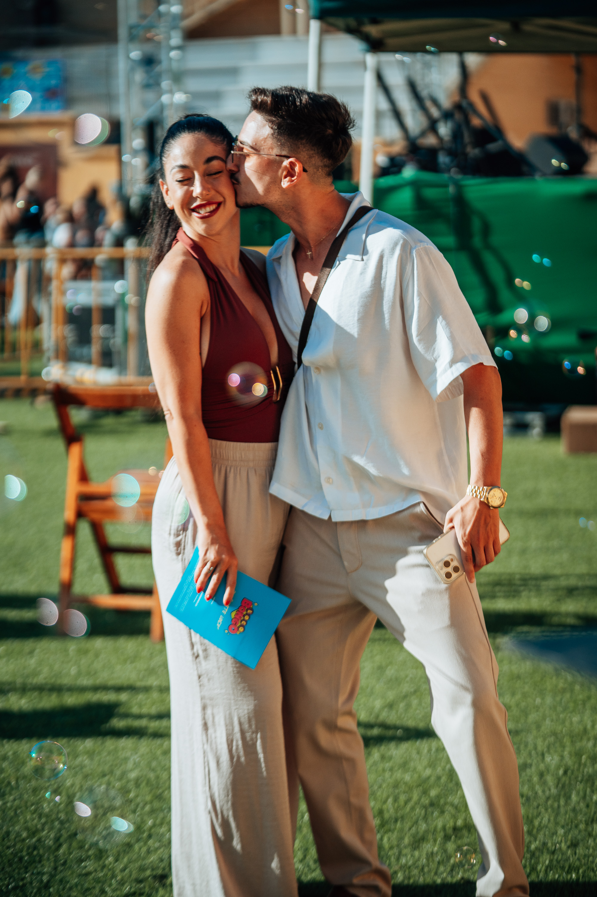
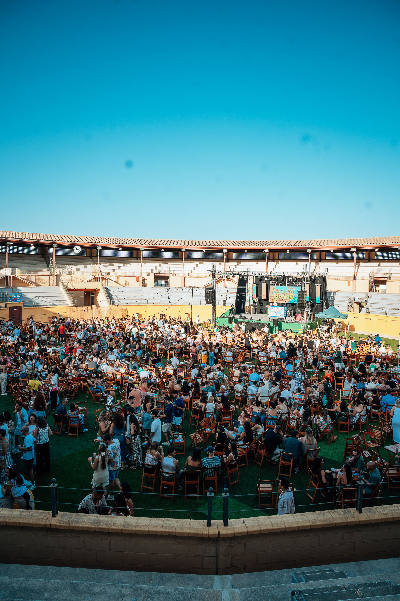
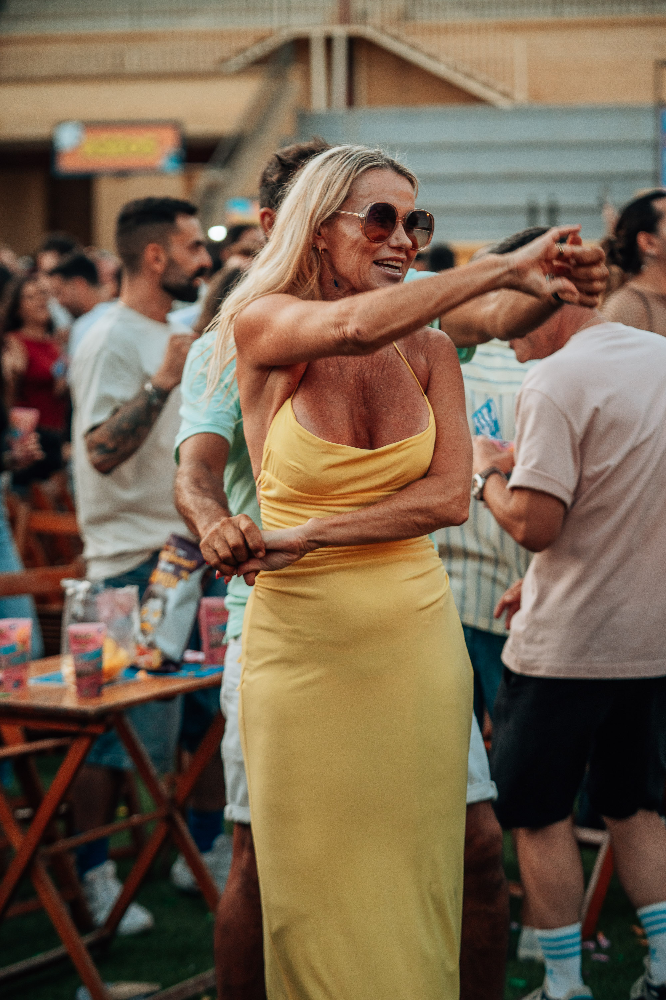
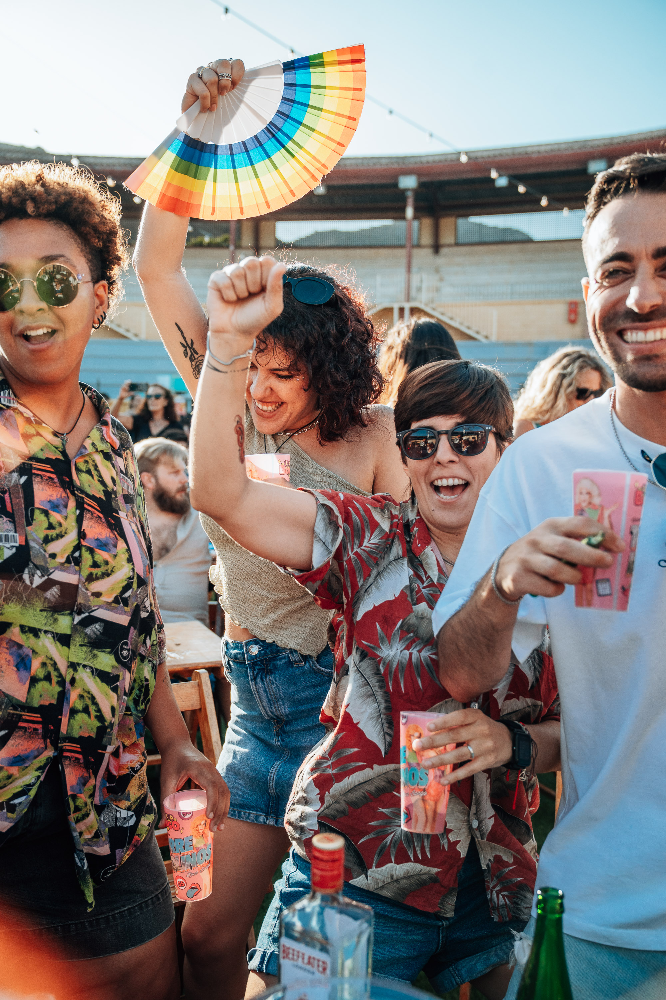
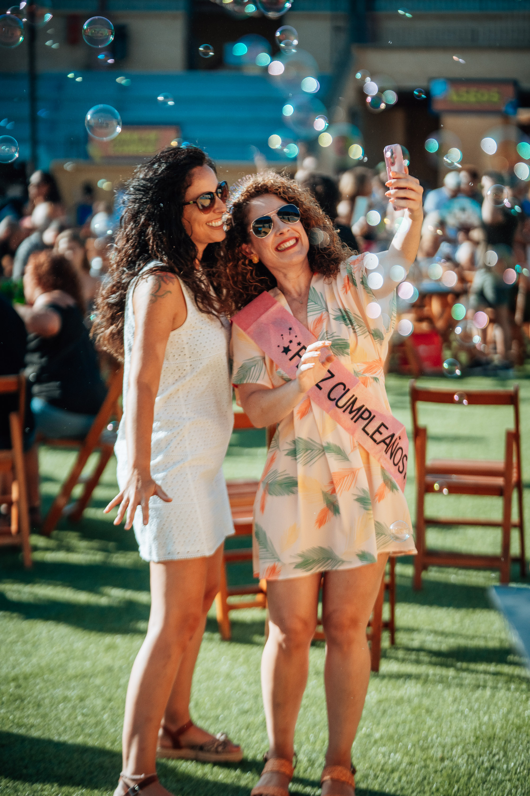
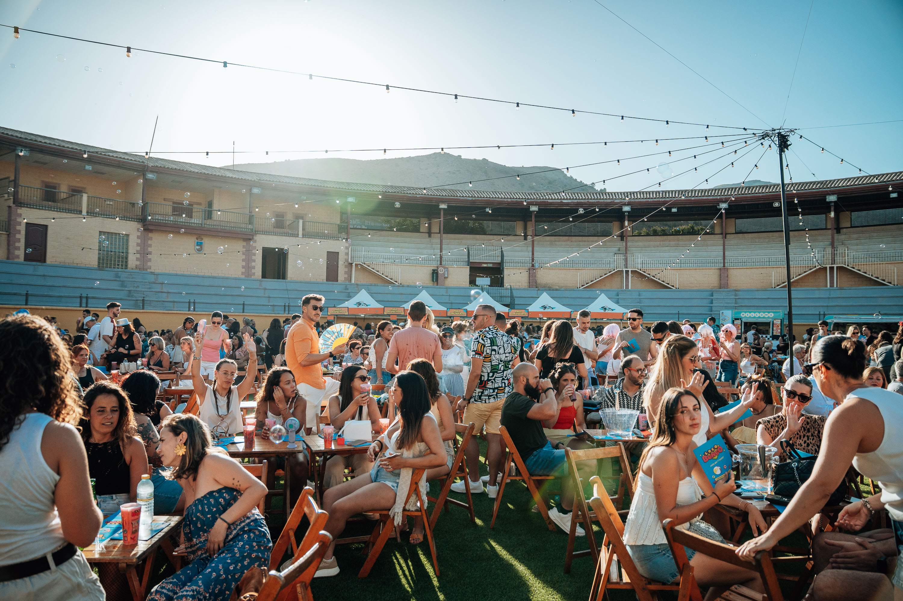
Todo el recinto está cubierto de césped para que disfrutes del tardeo de la forma más cómoda.
Reserva tu mesa y aprovecha las ofertas 4x3. ¡Plazas limitadas, no te quedes fuera!
Dentro del recinto encontrarás puestos de comida y bebida durante toda la fiesta.
No se permite el acceso con comida ni bebida del exterior. Encontrarás todo lo que necesitas en los puestos del recinto.


Programación en directo para todos los gustos.
Historias que emocionan y hacen reír. Comedia, shows al aire libre.
Sabores y buen rollo para compartir.
Mucho más que cultura. Planes para disfrutar con amigos, en pareja o en familia todo el verano.
De la apertura en julio al gran cierre de septiembre, así avanza la temporada en la plaza.
Loco Bongo abre Plaza Paraíso y enciende el verano. Empieza el ciclo de tardes al aire libre en el ruedo.
Laura Gallego en directo el 7 de agosto y la gran fiesta del verano, con la música como protagonista cada fin de semana.
Sigue la Luz, con Xenon Spain y Paca la Piraña, y Las Pilardos en Operación Marbella: show, comedia y mucho arte.
El sabor de Italia aterriza en Torremolinos. Dos días de gastronomía, ambiente y planes para compartir.
El fenómeno internacional llega a la plaza para una de las tardes más esperadas de toda la temporada.
Loco Bongo despide la primera edición de Plaza Paraíso. Nos vemos el próximo verano en la plaza.
La Plaza de Toros está a un paso de Málaga capital. Estas son las formas más simples de venir a la tarde y de volver de madrugada.
Sale de Málaga Centro-Alameda. Bájate en la estación de Torremolinos; desde ahí, 1,5 km hasta la plaza (~18 min a pie o taxi corto). Billete en máquinas o app Renfe.
Directo desde Muelle Heredia / Alameda Principal a Torremolinos. Para en el casco urbano; baja en la parada más cercana a la plaza y camina.
Puerta a puerta desde cualquier punto del centro. Cabify/Uber, precio similar o algo inferior, reserva desde la app.
Los sábados opera hasta las 03:00, así que hay servicio a la 1:00. Parada más cercana en el centro de Torremolinos (Av. Palma de Mallorca), a ~10 min a pie. Horario exacto en ctmam.es o app CTMAM.
Punto de recogida: Calle Los Nidos / Av. del Real, frente a la plaza, o la rotonda más cercana con espacio para parar.
El último tren desde Torremolinos hacia Málaga sale sobre las 23:30. A la 1:00 ya no hay servicio.
Horarios y precios orientativos para un sábado de verano de 2026. Confirma siempre el horario del día en Renfe Cercanías y en ctmam.es antes de salir.